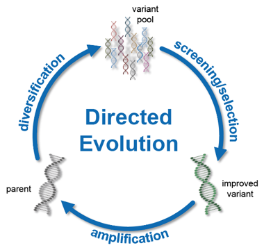

Makine Öğreniminin Yönlendirilmiş Evrimde Kullanılması
Derin öğrenme methodu kullanarak, amino asit dizisinden çözünürlük tahmini yapan model geliştirilmesine dayanan proje, derin öğrenme methodunun biyolojide kullanımının bir öğreniğini oluşturuyor.
Full Paper